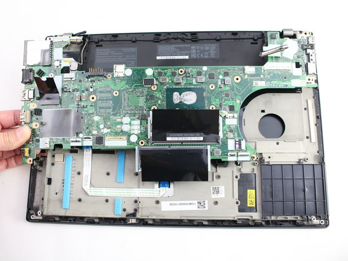

Find which branch is shorted on a laptop board
Compare cold resistance against a reference, then split a 5 V trainer to isolate a failed branch before you touch a donor motherboard.
Decide whether the motherboard is the next thing to test
Work from the last confirmed observation. An intact laptop with a matching adapter, an established input and no sign of POST is a different case from a machine that boots to an external monitor. Use a known-good adapter, the model's diagnostic lights or tones, and the supported minimum configuration. A detachable keyboard, jack, display cable or peripheral can produce a symptom that looks like a failed board. P96 barrel jack checks · P87 USB-C input diagnosis · Dell's fault definitions and diagnostic branches.

Photo by Sarah Westberg for iFixit, scaled with on-page callouts. Original repair photograph · CC BY-NC-SA 3.0.

Photo by Profpcde, with on-page callouts. Original photograph · CC0.

Watch. Mark the first point at which the documented input or regulator state differs from the expected state. For your exercise, measure only the trainer live. Laptex explains common no-power motherboard stages.
Build the 5 V fault isolation trainer
Use an isolated 5 V bench supply set no higher than 60 mA, a breadboard, a 100 Ω resistor rated at least 0.5 W, two 1 kΩ resistors, two removable jumpers, a spare wire as a fault and a multimeter. The 100 Ω resistor limits a hard short to about 50 mA. Keep this circuit separate from the laptop.
Make two load branches. Run 5 V through the 100 Ω resistor to a test node labelled
RAIL. Wire fromRAILthrough jumper A and 1 kΩ to return. Repeat through jumper B and the other 1 kΩ. Add a separate test point on each branch immediately after its jumper.Measure the intact board. With both supply leads disconnected and both jumpers in, measure
RAILto return. Two 1 kΩ resistors in parallel give about 500 Ω. Use the same meter range and reference throughout. Power only the trainer to verify about 4.17 V at the node, then disconnect the supply again.Reproduce a collapsed rail. Link the node immediately after jumper B to return with the spare wire. For a blind test, have a partner install this fault on A or B with the supply disconnected. Both branch test points now look shorted through the jumpers. If you power this trainer briefly, the protected rail drops near zero. Disconnect both supply leads again to work in resistance mode.
Split the shared node. Remove one jumper at a time while power remains off. Measure the common rail and each detached branch to return. With B isolated, the common rail returns to about 1 kΩ, and B stays near the shorted-lead reading. Remove the fault wire and put the jumper back before repeating the baseline.
| Condition with supply disconnected | RAIL to return | Branch B to return |
|---|---|---|
| Both branches healthy and connected | About 500 Ω | About 500 Ω through the common node |
| B shorted, both jumpers installed | Near shorted-lead reading | Near shorted-lead reading |
| B shorted, jumper B removed | About 1 kΩ | Near shorted-lead reading |
Transfer the reasoning to an actual motherboard
On an owned donor, record the board identifier and revision and follow its service instructions for charger, main battery and any other energy sources. Find a trustworthy schematic for that revision. Locate the supply net, ground reference, regulator, loads and a documented point where a section can be disconnected. The T480 drawing linked here applies to the specific board marked NM-B501 revision 0.1. Check your actual board before using it. T480 board schematic example.
Measure the suspect rail cold. Record range, polarity, settling time and the same readings on an identical reference board if available. A capacitor can charge from the meter and make the reading climb. Processor core rails often look low even when healthy. Accessible connectors on a documented rail make good first isolation points. Treat any soldered isolation link, inductor lift or voltage injection as separate supervised work that requires confirmed rail limits and board topology. The 5 V trainer's parameters apply to its resistors alone. T24 in-circuit measurement · P26 practice on a rework board.
Write the last confirmed startup stage, the exact net that differs, the readings before and after isolation and the remaining candidate components. Once a specific accessible component has been proven faulty, check whether you can identify and source its replacement. Verify the original symptom again after the repair.